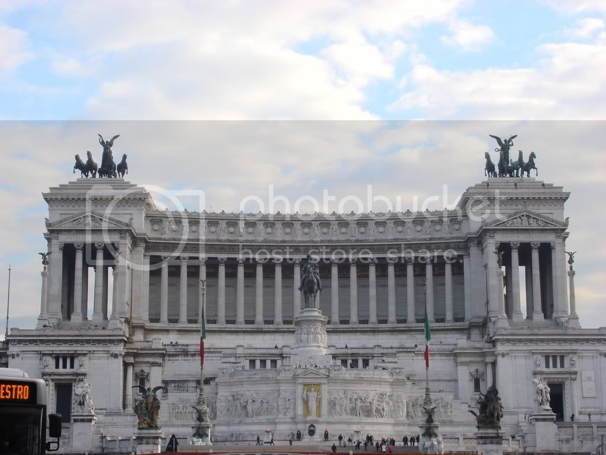
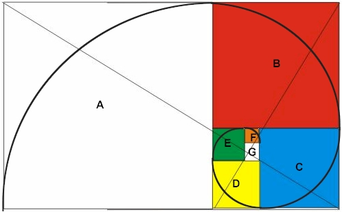
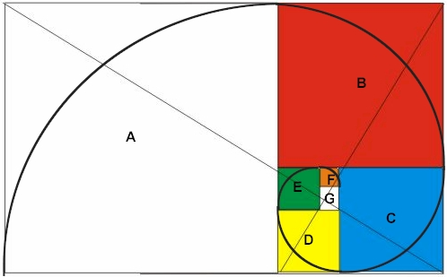
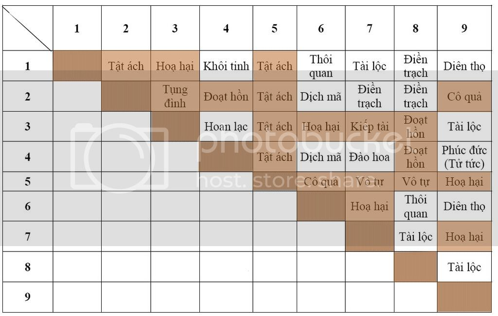
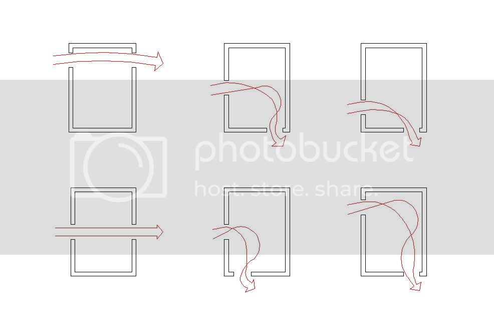
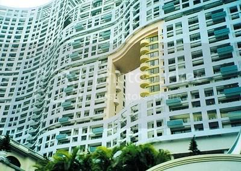
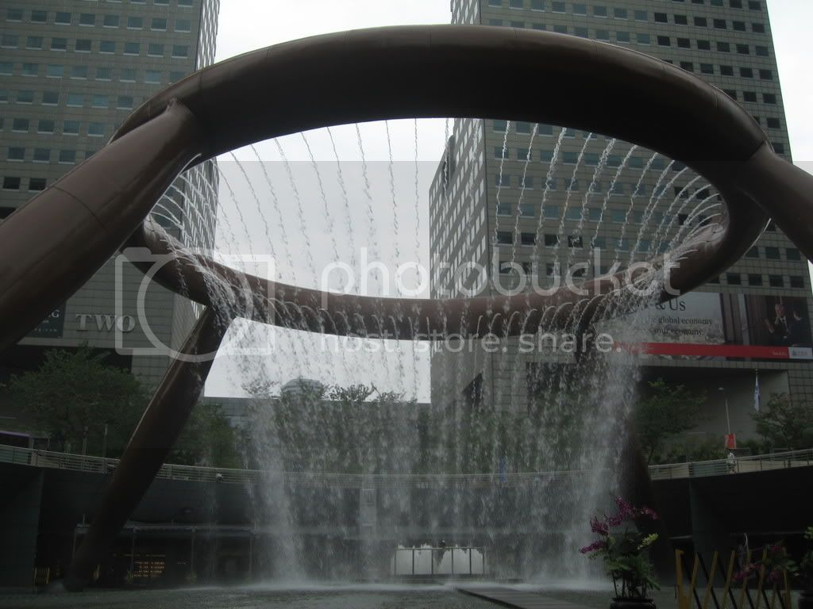

Trong đời sống xã hội ngày nay có một xu hướng ngày càng nở rộ đó là là sự ứng dụng của Phong thuỷ trong mọi lĩnh vực liên quan đến xây dựng và kiến trúc. Từ việc xây dựng nhà cửa, tu tạo lăng mộ cho đến xây dựng các xưởng sản xuất và các cơ quan hành chính. Xu hướng này phải chăng là một sự tất yếu khi mà xã hội bắt đầu có sự sung túc thịnh vượng nên người ta đã rộng rãi nghĩ đến bắt chước người xưa? Hay chính tính hiệu quả của phong thuỷ được ứng dụng gần như suốt chiều dài của lịch sử văn minh Đông phương và ngày nay đã được khoa học coi như một đối tượng nghiên cứu? Vậy thực ra phong thuỷ là gì? Và nó có mối liên hệ thế nào với kiến trúc hiện đại mà lại được quan tâm như vậy.
Bài viết này không có tham vọng khám phá sâu vào những vấn đề định lượng và bản chất của phong thuỷ mà chỉ xin được đưa ra những kiến giải riêng về vấn đề này qua sự so sánh những quan niệm trong ứng dụng của phong thuỷ với kiến trúc hiện đại.
Thời gia gần đây, trào lưu ứng dụng Phong thuỷ trong các thiết kế về nhà ở dân dụng cũng như các cơ sở sản xuất kinh doanh v.v dường như là một xu hướng rất thịnh hành. Mặc dù vậy, có thể nói đại bộ phận dân chúng tuy ứng dụng phong thuỷ nhưng vẫn chưa hiểu hết giá trị thực của bộ môn này. Dường như họ vẫn tin vào nó như một thứ quyền năng huyền bí, hoặc như một thứ tôn giáo cao cả nào đó, số ít hiểu biết hơn thì coi đây như một liều Placebo diệu kì trong y học, một phần nhỏ hơn thì biết được tính ứng dụng khoa học của bộ môn này, nhưng số đông vẫn là những hiểu biết còn lệch lạc và chưa thấu đáo.
I - Vậy thực ra Phong thuỷ là gì?
Theo từ điển Hán Việt thì Phong là gió, thuỷ là nước. Phần lớn chỉ quan niệm đơn giản cho rằng: phong thuỷ là một khoa chuyên nguyên cứu về quan hệ giữa gió và nước và ảnh hưởng của nó đối với đời sống con người. Nhưng nếu chỉ hiểu như vậy thì quả là chưa đánh giá đúng cái chân giá trị và vai trò của Phong thuỷ trong đời sống con người!
Lịch sử hình thành các dân tộc phương Đông có khoảng trên dưới năm ngàn năm thì cũng gần hết chiều dài lịch sử đó đã thấy có sự xuất hiện của Khoa Phong Thuỷ. Những văn bản cổ xưa nhất đã ghi dấu lại bằng giáp cốt văn (chữ nòng nọc – Khoa đẩu) sau khi giải mã đã cho thấy rõ điều này.
Các thành ngữ trong dân gian như : “Chọn đất mà ở” (trạch địa nhi cư), “Gần nước hướng về mặt trời” (cận thuỷ hướng dương) cho thấy các quan niệm chọn đất có phương pháp đã phổ biến rộng rãi trong tư tưởng mọi người. Điều này chỉ ra rằng: đã có một hệ thống tư tưởng định hướng cho dân cư cổ đại trong việc chọn địa bàn sinh sống khi thòi kì quần cư bắt đầu. Dấu vết này cũng có thể nhận thấy trong Kinh Thi là tập hợp ca dao tục ngữ cổ, tương truyền do Khổng tử biên tập lại. Những sách vở được coi là vào thời kì Thương, Chu các địa danh đã có sự phân định khá chi tiết như đồi, núi, gò, đống chỉ những khu vực địa hình cao so với sông , suối, lạch, ngòi là những từ để mô tả những khu vực thấp trũng mang nước. Chứng tỏ con người thời kì này đã ý thức rất rõ về sự khác biệt giữa hình thể và tác dụng của nó ảnh hưởng thế nào đối với con người. Ngoài ra sử sách khi nói về sự kiện xe chỉ hưóng Nam cón từ thời thượng cổ cũng chỉ ra được thành tựu của con ngưòi trong việc định phưong hướng địa bàn.
Truyền thống ứng dụng phong thủy của nến văn hiến Việt cũng được nhắc nhở tới từ thời Hùng Vương dựng nước: Trong những câu chuyện truyền miệng của các cụ già ở đất Phong châu xưa, sự kiện Vua Hùng tìm đất đóng đô dựng nước vẫn luôn được nhắc đến với đầy lòng trân trọng và sự tự hào, Nhà nghiên cứu Phan Kế Bính cũng đã sưu tầm và biên soạn truyền thuyết này vào trong cuốn Nghìn xưa văn hiến do nhà xuất bản Thanh niên phát hành năm 1999.
Như vậy có thể nói Phong thuỷ tồn tại song hành với lịch sử phát triển trải hàng nghìn năm. Tính hiệu quả của phong thủy trong xã hội Đơng phương là không thể phủ nhận. Phong thuỷ đã có những đóng góp không nhỏ trong sự phát triển của các quốc gia Phương Đông, có tính tích cực như góp phần hoạch định những khu Kinh thành sầm uất náo nhiệt, kiến tạo nên những cung điện nguy nga, khiến Tây phương cũng phải ngưỡng mộ. Nhưng trong một số không ít các trường hợp do cách giải thích của những người làm nghề phong thủy vì mục đích vụ lợi hay do thiếu hiểu biết khiến ; khiến Phong thuỷ được hiểu như là một môn khoa học thần bí và bị ngộ nhận là bùa mê, thuốc lú làm tiền người dân, mê muôi một bộ phận dân chúng, gây những nghi ngờ không đáng có đối với bộ môn này.
Đã có thời gian Phong thuỷ được đánh đồng với tôn giáo. Thậm chí bị coi là nhảm nhí, là mê tín dị đoan cũng chính do cách giải thích thiếu hiểu biết của chính các thầy Phong thuỷ, muốn thần thánh hoá, làm thần bí phức tạp thêm trong con mắt của gia chủ nhằm trục lợi cho bản thân.
Trong bài viết này người viết xin đưa ra những luận điểm của mình với hy vọng đóng góp vào việc đưa môn Phong thuỷ dưới góc độ khoa học nhằm tránh sự hiểu nhầm sai lạc dễ đánh đồng một môn Khoa học cổ truyền với tôn giáo hay với mê tín dị đoan.
Ngày nay, phong thuỷ đã được coi là một đối tượng nghiên cứu khoa học. Nhiều nước tiên tiến trên thế giới đã có những cơ quan nghiên cứu về phong thuỷ. Là một người nghiên cứu về phong thủy và là một nhà kiến trúc, tôi nhận thấy rằng: Nếu chúng ta loại bỏ những cách giải thích rời rạc, bí ẩn về những khái niệm trong phong thuỷ thì những phương pháp ứng dụng trên thực tế của phong thuỷ hoàn toàn mang tính khách quan, tính quy luật, tính nhất quán và khả năng tiên tri. Đấy là những yếu tố thoá mãn tiêu chí khoa học cho một phương pháp khoa học.
Căn cứ vào những tiêu chí này, chúng tôi có thể khẳng định rằng: Phong thuỷ là một phương pháp khoa hoc, hoàn toàn không mang tính tín ngưỡng hoặc mê tín dị đoan. Phong thuỷ là hệ quả của một tri thức nghiên cứu về các qui luật tương tác của thiên nhiên, môi trường và là phương pháp thay đổi chỉnh sửa những hiệu ứng tương tác của môi trường lên cuộc sống của con người.
Vấn đề còn lại là chúng ta cần phải tiếp tục coi phong thuỷ như là một đối tượng khoa học để khám phá những thực tại được thể hiện qua những khái niệm ngôn ngữ cổ trong phương pháp luận của phong thuỷ.
II – So sánh những tương đồng của Phong thuỷ với kiến trúc hiện đại.
A) Quan niệm cân bằng Âm Dương trong phong thuỷ và tính hài hoà trong kiến trúc hiện đại.
Trước đây có người đặt vấn đề rằng: Liệu có hay không tồn tại một Khoa Phong thuỷ ở Tây Phương hay một câu hỏi cụ thể hơn là: Các công trình Pháp trên Việt Nam đã tồn tại cả trăm năm nay, liệu có sử dụng giải pháp gì về Phong thuỷ không mà lại tồn tại dài lâu đến vậy?
Trước hết xin đưa ra quan điểm của nguời viết dưới góc độ một người được đào tạo chuyên môn về kiến trúc là: Để một công trình kiến trúc có thể tồn tại trong một khoảng thời gian dài hàng trăm năm ấy nó phải đạt đựơc ít nhất là hai yếu tố: Thứ nhất là về tính thẩm mĩ của công trình; thứ hai là nó phải đạt về mặt hợp lí trong công năng sử dụng. Hay nói ngắn gọn là nó phải đẹp và hài hoà thì nó mới tồn tại lâu dài và thứ hai là phải hợp lý trong quá trình sử dụng thì nó mới được người đời trân trọng gìn giữ và không bị đập đi thay thế bằng công trình khác .
Đứng dưới góc độ Phong thuỷ mà nói thì khi mà công trình kiến trúc tồn tại được trong một thời gian dài thì các yếu tố về cân bằng Âm dương và ngũ hành phải đạt đến mức độ chuẩn mực. Tức là nó phải bao hàm cả yếu tố thẩm mỹ và tính hài hoà cân đối. Khi các yếu tố về Âm dương và ngũ hành cân bằng – tức là tính thẩm mỹ, tính hài hoà và cân đối cao - thì tự bản thân công trình sẽ có tác động tích cực đến ý thức con người, khiến ngưòi ta có những ý nghĩ trân trọng và có ý nghĩ bảo tồn nó.
Nói cụ thể hơn như chúng ta cũng biết trong ngôn ngữ tạo hình kiến trúc, sự phối hợp giữa các mảng đối lập tạo nên tính thẩm mĩ công trình (về màu sắc, kiểu dáng, chất liệu). Trong cân bằng có yếu tố cân bằng động và cân bằng tĩnh, nhưng chung qui vẫn cần có sự cân bằng. Để có được sự cân bằng này thì việc điều chỉnh các mảng đối lập nhau như mảng đặc đối với mảng rỗng, phần gồ ghề với phần phẳng nhẵn, miếng có kính đối với phần thịt còn lại, phần diện tích sân vườn và phần diện tích công trình phải tìm được sự hài hoà nghĩa là đạt được những tỉ lệ chuẩn mực. Những yếu tố cần về sự hài hoà trong kiến trúc hiện đại trên đây cũng chính là quan niệm của phong thuỷ với khái niệm hài hoà Âm Dương và tính tương sinh của Ngũ hành.
Cân bằng Âm dương, Ngũ hành trong lý học Đông phương ngoài sự ứng dụng trong phong thuỷ, chúng ta cũng có thể thấy quan niệm này khi tới Đông y. Thuyết Âm Dương Ngũ hành ứng dụng trong Đông y quan niệm rằng: Khi con người được trạng thái cân bằng Âm Dương, Ngũ hành điều hoà thì sức khoẻ dồi dào, tâm sinh lý ổn định. Chỉ khi nào mà âm dương phân tán, Ngũ hành tạp loạn đưa đến mất cân bằng sinh học thì sẽ nảy sinh tật bệnh khi đó mới cần đến sự điều chỉnh lại của bác sĩ.
Như vậy, chúng ta thấy rằng: Quan niệm cân bằng Âm Dương, Ngũ hành hài hoà chính là một quan niệm phổ biến của thuyết Âm Dương Ngũ hành và cũng ứng dụng trong phong thuỷ.
Dưới đây là hình một công trình kiến trúc Tây phương có sự cân bằng và hài hoà Âm Dương theo cái nhìn của phong thuỷ Đông phương.

B) Tỷ lệ vàng trong nghệ thuật và kiến trúc phương Tây và khái niệm tỷ lệ “Tường minh” trong phong thuỷ Đông phương.
Trong các ngành nghệ thuật tạo hình nói chung và trong nghệ thuật Kiến trúc nói riêng tồn tại những con số, những tỷ lệ được coi là chuẩn mực. Con số và tỷ lệ này được tìm thấy qua quá trình lao động và đúc kết bằng kinh nghiệm khi quan sát và chọn lọc từ giới tự nhiên. Khi đem các con số, các tỷ lệ này vào ứng dụng trong các tác phẩm về nghệ thuật, các công trình kiến trúc thì luôn tạo được hiệu quả thẩm mỹ tuyệt vời. Tỷ lệ vàng ra đời từ đó
 

Trong phương pháp ứng dụng của Huyền không ta cũng tìm thấy có những sự liên hệ tương ứng . Khi quán xét 16 cách cục trong Huyền không, Ta nhận thấy trong bảng này gồm 17 cung cát và 28 cung hung và bán hung. Kết hợp với tỉ lệ “Tam phần nhân định Thất phần thiên”, được hình chữ nhật với tỷ lệ tương đương 28/17, 3 = 1,618. Đây chính là tỷ lệ vàng trong kiến trúc Phương Tây mà trong Phong Thuỷ Phương Đông gọi tỷ lệ cân bằng này là tỷ lệ “Tường minh”.

C) Quan niệm về vận động của khí trong phong thuỷ và cấu trúc nhà ở hiện đại
Ngoài ra sự vận hành trơn tru của dây chuyền công năng tạo nên sự hợp lý của một công trình kiến trúc, cũng chính là sự vận động của dòng khí trong Phong thuỷ. Quan niệm của phong thuỷ cho rằng: khi dòng khí vận động không có sự hỗn loạn. Tức là sự bố trí hợp dây chuyền, sản xuất, hoặc cấu trúc bên trong ngôi nhà trong không bị chồng chéo, phức tạp thì công trình đó sẽ ổn định lâu dài. Hay nói cách khác một công trình không hợp lý về mặt công năng, không chóng thì chầy sẽ phải cải tạo lại, Quan niệm của Phong thuỷ cho rằng: khi các dòng khí chuyển dịch hỗn loạn thì tác động không tốt đối với chủ thể công trình. nếu cá nhân chủ thể công trình có nhận thức được điều này sẽ tự khắc điều chỉnh lại (tức là cải tạo sửa chữa), nếu không thì chính sự bất thường này sẽ tạo bất lợi tới chủ nhân công trình đó, nếu là cơ sở sản xuất kinh doanh thì sẽ thua thiệt, phá sản và rồi dễ bị các cá nhân khác thâu tóm dẫn đến sự thay đổi công trình.
Thực ra trong khi Phong thuỷ cổ truyền tồn tại cả ngàn năm trên vùng đất Phương Đông huyền bí thì ở bên trời Tây các ngành khoa học nghiên cứu về mối quan hệ giữa công trình, tự nhiên, thiên nhên và con người cũng tồn tại trong khoảng đó. Các dân tộc trên bán đảo Ban căng cả ngàn năm xưa cũng đề cao các yếu tố gió nước tác động đến cao người qua các nghiên cứu của Hipocrat Olimpia, Acrantit.. rồi cả người Ai cập cổ đại khi xây dựng Kim tự tháp bằng đã cũng dựa nào từ trường của trái đất để hoạch định trong xây dựng cả.
Trong Kiến trúc hiện đại ngày nay có một bộ môn nghiên cứu mà về cách thức vận hành và ứng dụng cũng có những điểm tương đồng với các phương pháp ứng dụng trong Phong thuỷ cổ truyền. Ví dụ như chúng ta có thể so sánh tính tương đồng trong môn Vật lí kiến trúc là một bộ môn nghiên cứu về ảnh hưởng tương tác của các yếu tố vật lí môi trường với con người và công trình và một bên là yếu tố ảnh hưởng cuả cảnh quan theo phương pháp Loan đầu Hình lý khí trong Phong thuỷ.
Cụ thể là Vật lí Kiến trúc trong nghiên cứu về sự phân bổ của gió tự nhiên trong phòng thì đưa ra những qui luật là không tạo các cửa đối nhau trong phòng, kể cả khi cửa sổ đối diện với cửa phòng. Lí do là khi các cửa đối nhau này hình thành thì đễ tạo các luồng gió xuyên phòng đột ngột không có lợi cho người ở, thứ hai là sự lưu thông không khí trong phòng kém dễ tạo môi trường thuận lợi cho các loại vi khuẩn yếm khí hoạt động, điều này không tốt cho sức khoẻ con người.
Chúng ta có thể nhận thấy điều này qua hình minh hoạ dưới đây trong vật lý kiến trúc.

Trong quan niệm của yếu tố Cấu trúc hình thể - Dương trạch - thì sự vận hành của dòng khí được rất xem trọng và cũng không chấp nhận sự đối môn của các cửa thông nhau. Giả dụ như nếu gặp ba cửa liên tiếp thì các phong thuỷ gia kinh nghiêm sẽ lập tức chuyển cửa thứ ba sang một bên, hoặc sử dụng bình phong để thay đổi sự vận hành của dòng khí theo quan niệm phong thuỷ. Quan niệm phong thuỷ cho rằng: Khi dòng khí quá mạnh có thể biến thành xung sát khí. Bên cạnh đó trong môn này cũng rất chú trọng tìm cửa thoát khí sau khi đã tìm được cửa nạp khí quan trong, nhằm tránh hiện tượng bế khí có thể gây những trục trặc về sau này cho gia chủ.
Đó chính là những điểm tương đồng của Cấu trúc hình thể trong phong thuỷ với Vật lí Kiến trúc. Nhưng bên cạnh đó thì phong thuỷ còn chú trọng cả việc tìm cửa với sự tương quan của cửa đối với Thái cực còn gọi là tâm công trình và tác động của cảnh quan môi trường – phương pháp Loan đầu.
Trong các nguyên lí thiết kế dù là cơ bản nhất trong Kiến trúc cũng thấy có sự tương đồng. Ví dụ như khi Quán xét một khu đất để đưa ra bố cục công trình thì một Kiến trúc sư có nghề luôn phải chú trọng tìm đường to phố lớn, các trục giao thông chính để hướng công trình mình thiết kế về chỗ đó. Còn trong phương pháp ứng dụng của Phong thuỷ cũng lấy dương làm hướng, tức là cũng tìm luồng chảy của con sông, mặt hồ , hay luồng người đi lại trên đường phố để đón lấy dòng sinh khí vậy. Phong thuỷ gọi đây là sự vô tình hay hữu tình của công trình đối với các yếu tố tương tác còn lại. Hai khái niệm khác nhau của hai bộ môn khác nhau, nhưng đích đến thì hoàn toàn có sự thống nhất.
D) Cấu trúc hình thể trong phong thuỷ và kiến trúc hiện đại.
Ngoài ra chúng ta cũng có thể tìm khá nhiều những điểm tương đồng giữa Kiến trúc hiện đại và Phong Thuỷ ví dụ như: Phong thuỷ thường đặt Thuỷ trước công trình (Minh Đường tụ thuỷ) thì bên Tây phương việc hồ nứoc xen lẫn công trình cũng là điều được khuyến khích vì mặt nước thì ngoài việc tạo điểm nhấn sinh động, giúp tăng không gian tăng độ bề thế cho công trình nó còn cung cấp thêm các ion âm có lợi cho sức khoẻ, đồng thời những khu vực nào có hồ nước sẽ giúp điều tiết khí hậu. Khoa học nhận thấy rằng các khu vực gần biển hoặc nhiều sông hồ thì thường có lợi hơn các khu vực còn lại với nhiệt độ chênh lệch khoảng từ 1 đến 2 độ C.
Như vậy là qua những dẫn chứng căn bản ở trên, chúng ta cũng thấy được những sự tương quan ứng dụng của Phong thuỷ Đông phương với những tri thức khoa học và kiến trúc hiện đại và chúng ta về cơ bản cũng thấy được tính khoa học của phương pháp ứng dụng trong phong thuỷ Đông phương.
Nhưng tới đây có thể đặt vấn đề là nếu như vậy thì tại sao không bỏ Phong thuỷ cổ truyền mà chỉ cần ứng dụng những môn Khoa học hiện đại vì những tương ứng thay thế nó và những nghiên cứu khoa học của kiến trúc hiện đại lại còn có thực nghiệm chi tiết và cụ thể hơn, chứ không mang tính định tính khó kiểm chứng như Phong thuỷ. Những điều này sẽ được lý giải ở phần tiếp theo dưới đây.
II - Phong thuỷ và những vấn đề cần tiếp tục khám phá dưói góc nhìn khoa học.
Quả thật Phong thuỷ là một môn học thuật cổ từ ngàn năm nay và với tri thức hiện đại thì chúng ta thấy rằng những ứng dụng phong thuỷ mới chỉ mang nặng định tính chứ chưa cụ thể chi tiết và mang tính định lượng như Khoa học hiện đại. Chúng ta cũng biết rất rõ điều này. Tuy nhiên trong Phong thuỷ đã có những ứng dụng thành công từ rất nhiều năm nay nhưng khoa học hiện đại với những công cụ tiên tiến nhất vẫn chưa thể giải thích nổi.
Như trong Phái Bát trạch thì dựa vào 8 hướng chính mà phân cung định hướng ra làm 8 quẻ, mỗi quẻ thì có một vai trò ảnh hưởng nhất định đối với chủ thể công trình. Như phương Nam chủ về Danh tiếng, Bắc thì chủ về Quan lộc địa vị, phương Đông chủ về gia đình sức khoẻ, Tây chủ về con cái , sự vui vẻ v.v. Khuyết hãm bất cứ một cung nào trong công trình thì đều ảnh hưởng đến chủ nhân công trình tương ứng về mặt đó. Trong các ứng dụng về phong thuỷ nhiều ngươì đều thừa nhận là có hiệu quả. Nhưng chúng vẫn tồn tại như một tiên đề và là hiện tượng cần tìm hiểu, khám phá của tri thức khoa học hiện đại.
Có thể dẫn chứng một trường hợp cụ thể một thời từng gây xôn xao dư luận . Đó là về một toà nhà chung cư hiện đại ở Hông kông, nơi những người nổi tiếng và thành đạt như Thành Long , Lý Liên Kiệt đẫ từng ở. Hiện tượng như sau:
Lúc xây dựng toà nhà thì mặt đứng toà nhà chưa hề có trổ lỗ thông khí (như trong ảnh), khi đó người dân trong khu dân cư hiện đại này toàn mắc những bệnh kì quái và gặp những chuyện không hay trong công việc. Sau khi đựoc xử lí theo tư vấn của chuyên gia về Phong thuỷ trích một lỗ trên mặt đứng toà nhà. Sau một thời gian thì thấy có sự thay đổi rất kì diệu: sức khỏe của đại bộ phận dân cư tăng lên trông thấy công việc thì trôi chảy hơn trước. Điều này Khoa học hiện đại cũng chưa có được những lí giải hợp lý, trong khi các thầy Phong thuỷ kinh nghiệm thì lại thấy rõ chân tướng của vấn đề. Những phong thuỷ gia cho rằng: Do toà nhà đã cản luồng khí được hình thành từ những dãy núi trước mặt, tạo nên một xung sát khí cho toà nhà này. Vì thế khi trổ một lỗ thông khí như hình dưới đây thì luồng khí trở nên thông thoáng, giải quyết sự bế khí theo Phong thuỷ (là một yếu tố xấu gây trì trệ bất lợi), từ đó tạo nên sự phát triển của ngôi nhà. Điều này khoa học chưa giải thích được.
Hình dưới đây thể hiện ô trống được thực hiện theo yêu cầu của phương pháp phong thuỷ.

Ngoài ra còn một số việc ngươì thật, việc thật như việc làm Phong thuỷ khu Trung tâm thương mại Simlim – Center, một khu thương mại chuyên bán hàng điện tử bên Singapore. Sau khi đạt được bố cục Phong thuỷ, nơi đây đã trở thành một trung tâm thương mại buôn bán Hàng công nghệ cao thuộc loại sầm uất nhất ở Singapore cũng như Đông nam á. Một điểm du lịch hầu như mọi khách du lịch khi qua Quốc đảo này đều muốn ghé qua. Khu du lịch này hàng năm đem lại những lợi nhuận rất đáng kể cho kinh tế nước này. Câu chuyện làm Phong thuỷ tại khu vực này đều được các hướng dân viên du lịch Singapore hướng dẫn rất chi tiết cho du khách và hầu hết người dân nước này đều biết.

Đối với những độc giả có quan tâm chủ đề Phong Thuỷ Lạc Việt trên trang Vietlyso.com đểu biết trường hợp nhà một người điên được hội viên Bigdog đưa lên nhờ giúp đỡ. Trường hợp này theo hội viên trên nói thì nạn nhân bị điên đến nỗi bệnh viện giả về, từ chối điều trị nhưng sau một thời gian nhà cửa được sự can thiệp của các chuyên gia Phong thuỷ của Trung tâm nghiên cứu lý học Đông phương tư vấn cho gia chủ cải tạo sửa chữa triệt để theo yêu cầu, tình hình đã thấy cải thiện rõ rệt, Trích nguyên văn lời hội viên Bigdog như sau : Hiện tình trạng của chủ nhà đã tiến triển rất nhiều. Từ chỗ bệnh viện Thanh Hoá ngừng điều trị Tây Y, chuyển qua Đông Y với ngầm hiểu là không cứu vãn được. đến nay chỉ sau hơn 1 tuần đã có thể đi chơi gần quanh xóm. Đã có thể nói chuyện vài ba câu đơn giản thể hiện sự phục hồi của não.
Như vậy qua các dẫn chứng từ những thực tế khách quan trên thì ta có thể nhận thấy là về mặt lý thuyết Khoa Phong thuỷ có những mặt tương đồng với khoa học hiện đại. Bên cạnh đó về thực tế lại có những ứng dụng hết sức diệu kì mà khoa học ngaỳ nay vẫn chưa giải thích được. Điều này có thể bước đầu khẳng định môn Phong thuỷ có những giá trị không thể xem thường và những ứng dụng của nó còn vượt cả nhận thức của những khoa học Hiện đại
Nếu đi sâu vào nghiên cứu những lí thuyết được coi là nền tảng của môn Phong thuỷ này thì ta cũng thấy được những lý thuyết này liên quan đến một tri thức cao cấp là Thiên văn học và hiệu ứng tương tác của từ trường trái Đất.
III - Phong thuỷ và tri thức hiện đại
A) Phong thuỷ và thiên văn học
Những người am hiểu về Phong thuỷ cũng đều biết là lý thuyết khởi nguyên trong những ứng dụng của Phong thuỷ đều dựa vào Hà đồ và Lạc thư làm tiền đề rồi từ đó phát triển thành phương pháp luận của thuyết Âm Dương Ngũ hành. Ví dụ như luận điểm của phương pháp Bát Trạch thì dựa vào Lạc thư phối hợp với Hậu Thiên bát quái làm nên tảng để phân ra các mệnh quái đối với từng loại người, rồi từ đó kết hợp với các quái Phương vị rồi luận cát hung, trong khi Phái Huyền Không thì lấy Lạc thư dùng để phi tinh đồng thời cũng kết hợp với Hà đồ và Tiên Thiên bát quái để luận đoán các cục vượng suy theo từng vận trình v.v.
Mà Hà đồ và Lạc thư theo một số nhà nghiên cứu thì được tìm ra do sự quan sát của ngưòi xưa về sự chuyển dịch của các vì sao trên trời.
1 - Bản chất Hà Đồ:
Hà đồ hoàn toàn không phải là do con Long Mã hiện lên trên sông Hoàng Hà và vua Phục Hy căn cứ vào các vòng xoáy trên người vẽ ra như cổ thư chữ Hán nhắc đến. Theo những công trình nghiên cứu của Trung tâm nghiên cứu Lý học Đông phương thì Hà Đồ chính là sự qui ước sự vận động có tính qui luật của ngũ tinh trong Thái Dương hệ. Điều này được mô tả như sau:
Quan sát kỹ hình ảnh Hà đồ và thử quan sát bầu trời ta có thể thấy:
Hàng tháng vào ngày 1, 6, 11 ,16, 21 ,26; hàng năm cứ vào tháng 1, tháng 6 thấy sao Thuỷ sắc đên xám ở Phương Bắc.( độ số 1 và 6)
Hàng tháng vào ngày 2, 7 ,12, 17 ,22, 27; hàng năm cứ vào tháng 2, tháng 7 thấy sao Hoả sắc đỏ đậm ở Phương Nam.( độ số 2 và 7)
Hàng tháng vào ngày 3, 8, 13, 18, 23, 28; hàng năm cứ vào tháng 3, tháng 8 thấy sao Mộc Sắc xanh ở Phương Đông .( độ số 3 và 8)
Hàng tháng vào ngày 4, 9, 14 ,19, 24 ,29; hàng năm cứ vào tháng 4, tháng 9 thấy sao Kim sắc đê trắng ở Phương Tây.( độ số 4 và 9)
Hàng tháng vào ngày 5, 10, 15 ,20, 25 ,30; hàng năm cứ vào tháng 5, tháng 10 thấy sao Thổ sắc vàng đục ở giữa bầu trời (độ số 5 và 10).
2 – Bản chất Lạc thư.
Quan sát kĩ hình ảnh của Tử vi viên và Thái vi viên sẽ thấy :
Năm chấm trắng chính giữa chính là toà Ngũ đế gồm 5 ngôi sao trong Thái vi viên.
Một chấm trắng chính giữa chính là sao Bắc thần, phương chính nam là chòm Thiên kỷ (gồm 9 sao), phương chính Tây chính là chòm Thất công( gồm 7 sao), Phương chính Đông gồm 3 sao trong chòm Câu trần. Bên phải là hai sao Hổ bôn, Bên trái là 4 sao Tứ phụ, bên phải Bắc Thần là chòm 6 sao Thiên trù, Bên trái Bắc cực là 8 sao của chòm Hoa cái.
Có thể nói Lạc thư và Hà đồ là những đồ hình căn bản trong tất cả các phương pháp ứng dụng của học thuật cổ Đông phương trong đó có phong thủy. Điều này cho chúng ta thấy nguồn gốc thiên văn là một yếu tố cấu thành quan trong của môn phongv thủy.
Như vậy chúng ta có thể thấy về cơ bản cội nguồn rất khoa học của Phong thuỷ chính là Thiên Văn học, vì dựa trên nguyên lý căn bản là những tri thức thiên văn học như đã trình bày ở trên.
B) Phong thuỷ và hiệu ứng từ trường trái đất.
Hiện tượng đầu tiên để minh chứng cho điều này chính là chiếc La kinh – một dụng cụ định hưởng cổ tương tự như La bàn hiện nay. Căn cứ sự đinh hướng của chiếc la kinh này và những nguyên lý căn bản từ tri thức thiên văn đã trình bày ở trên, tất cả mọi phương pháp ứng dụng của phong thuỷ được thực hiện dựa trên sự định hướng phương vị của la bàn. Hay nói cách khác: Phong thuỷ căn cứ vào hiệu ứng tương tác của từ trường trái Đất qua chiếc la kinh – tương tự như La bàn hiện nay.
Kết luận:
Có thể nói Khoa Phong thuỷ chính là sản phẩm sáng tạo của con người, nó được sớm hình thành cùng với sự phát triển của loài người từ xã hội sống quần cư đến xã hội văn minh, nó dựa vào các qui luận vận động khách quan và được tổng hợp lại bởi những tri thức của người xưa do đó nó có nhiều điểm tương đồng với các môn khoa học khác đặc biệt là những môn khoa học Hiện đại về xây dựng của Phương Tây. Thêm nữa với những nghiên cứu về Thiên văn học, ta cũng thấy rằng nền tảng lý thuyết cơ bản của Phong Thuỷ có liên hệ chặt chẽ tới môn khoa học cấp cao là Thiên văn học. Do đó việc nhìn nhận môn Phong thuỷ như một Bầu Trời Xanhtương nghiên cứu của khoa học vì có đầy đủ những yếu tố đáp ứng cho một tiêu chí khoa học là một việc cần thiết nhằm phục vụ đời sống con người.
----------------------------------------------------------------------------------------------------------------------------------
Sách tham khảo :
Tìm về cội nguồn Kinh Dịch tác giả Nguyễn Vũ Tuấn Anh.Xb 2002 Hà Đồ trong Văn minh Lạc Việt tác giả Nguyễn Vũ Tuấn Anh Xb:2007. Phong thuỷ ứng dụng trong Kiến trúc hiện đại tác giả Trần Mạnh Linh Xb năm 2007. Các giải pháp kiến trúc hậu Việt Nam tác giả : Phạm Đức Nguyên chủ biên. Xb năm 1998. Việt Sử lược của tác giả Trần Trọng Kim.